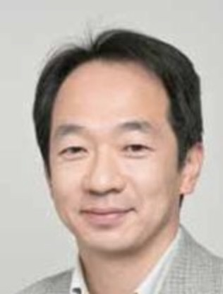

宇宙計測研究室
Spacetime Metrology Laboratory
法政大学理工学部創生科学科 佐藤研究室
研究室概要
アインシュタインの一般相対性理論は、中性子星・ブラックホールなどの巨大な質量系から「重力波」が放射されることを予言します。重力波は通常の電磁波による天文学では見通せない遥か太古の宇宙を探る格好の手段であることから世界的に注目されています。重力波の検出は太陽地球間の距離が水素原子の100 分の１だけ伸び縮みするような微小な変化を計測することに相当します。この超精密計測を礎とした人工衛星と観測装置の開発を行っています。
「重力波で探る宇宙」というテーマは、我々の宇宙の姿とその誕生のしくみを解き明かすという理学的目標を背景にしています。一方でその実現のためには、観測装置を考案・製作する工学的な手法を駆使します。更には装置を運用してデータを取得し、そのデータを解析するところまで自らの手で行います。これら一連の流れの中でいわゆる「問題解決の方法論」を一貫して体験することができます。あらゆる科学の分野に共通な「方法論」をしっかりと身につけることによって地球温暖化問題に代表されるような、今後ますます増えるであろう複合性を特徴とする諸問題に対して、見通しをもって解決に貢献できる人材の育成を念頭においています。
我々の宇宙は古代から現代に至るまで天文学をはじめとする様々な方法で調べられてきましたが、未だもって理解されているのはほんの一部分にすぎません。科学的な立場のみならず文化的・哲学的な見地からも宇宙に興味を持ち、宇宙の神秘と魅力を豊かに語り伝えられる人材の育成も大切にしています。
主な研究テーマ
変位雑音フリー干渉計の開発
衛星センサを利用した地球・宇宙観測
結合共振器のアラインメント制御
観測衛星データの解析と応用
デジタル干渉計の基礎研究
新型センサの開発と検証
アライメントフリー干渉計の開発
大気圏外の環境監視と解析
ドラッグフリーシミュレータの開発
大気現象の観測と予測
フォーメーションフライトシミュレータの開発
国内外の機関との研究協力
重力の逆二乗則の破れの探索
国内外の機関との研究協力
指導教員

佐藤 修一
教授
専門分野：時空計測学、宇宙重力波望遠鏡、リモートセンシング
最先端の光計測技術を駆使し、宇宙空間における重力波の検出や地球環境のリモートセンシングに関する研究を行っています。次世代の宇宙探査を担う熱意ある学生の挑戦を期待しています。
ニュース
近日更新予定です